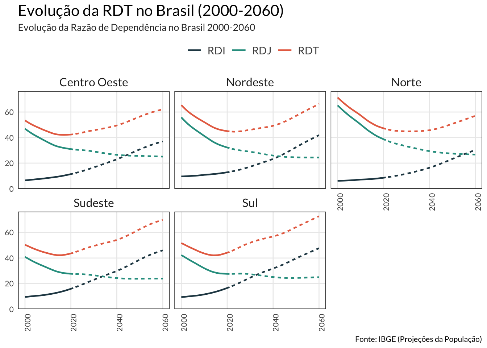
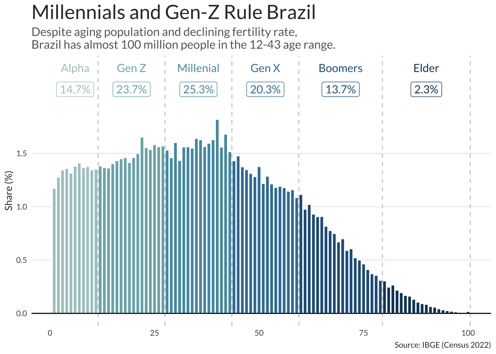
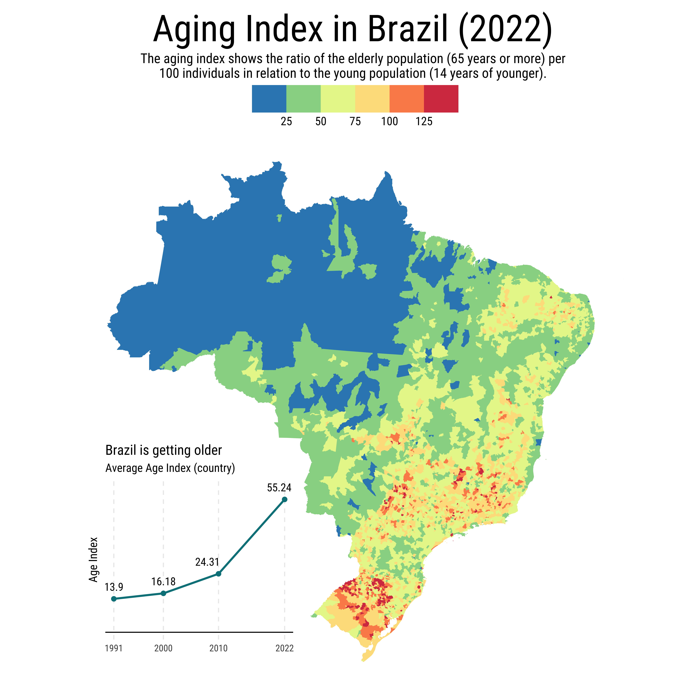
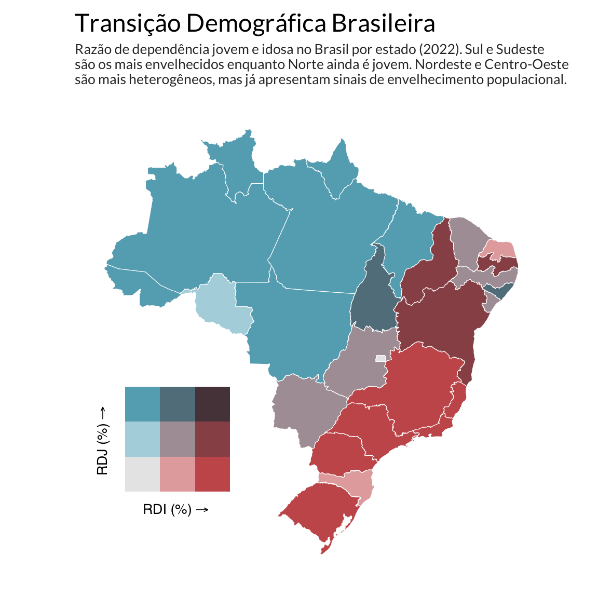
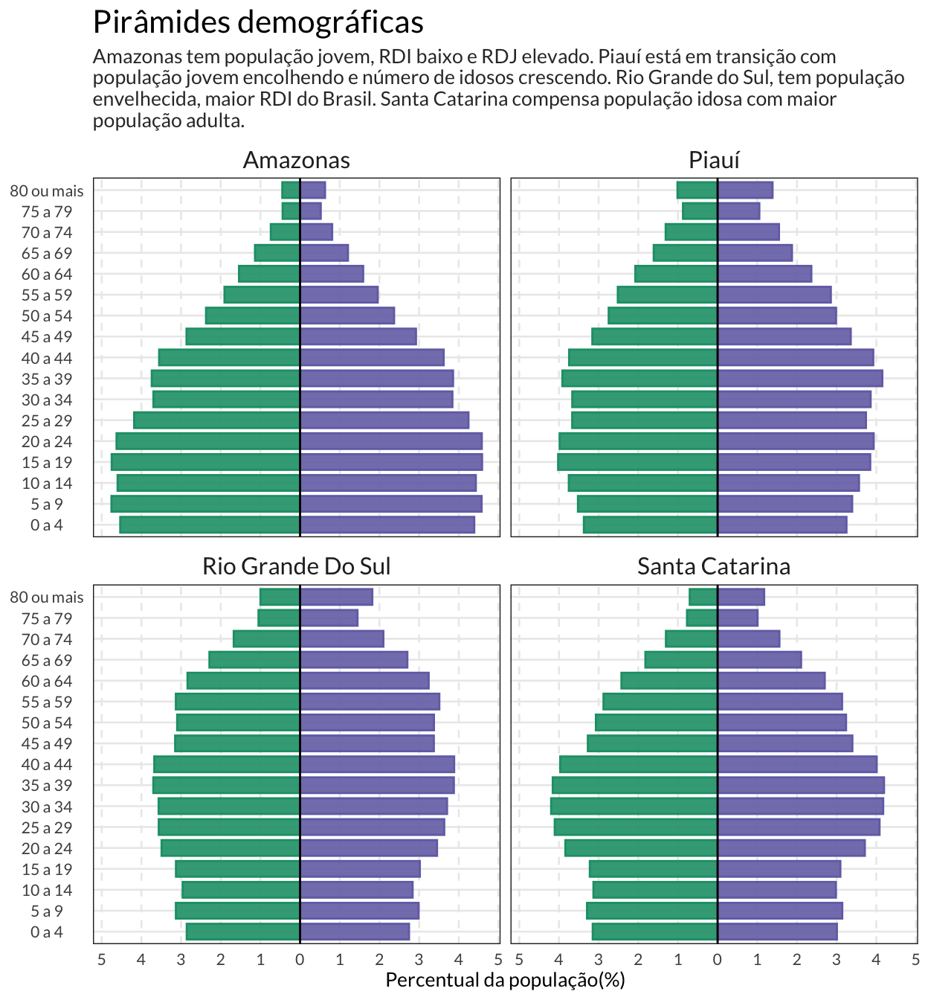

O Fim do Bônus Demográfico Brasileiro
Resumo
O Brasil tem a maior geração de jovens (12-43 anos) da sua história. Conhecidas como Geração-Z e Millenialls, estes jovens e jovens-adultos somam quase 100 milhões de habitantes.
A população brasileira já é idosa e vai ficar ainda mais nas próximas décadas. A proporção de idosos em relação aos jovens cresceu 300% desde 1991. Atualmente, há 30 milhões de idosos (60 anos ou mais) e este número deve saltar para 50 milhões até 2050.
Sul e Sudeste lideram o envelhecimento populacional. Essas regiões são as mais envelhecidas do país, trazendo desafios econômicos. Serão necessárias adaptações no mercado de trabalho, saúde pública, habitação e infraestrutura urbana para atender esta nova realidade demográfica.
A região Norte ainda tem um bônus demográfico significativo e será a última a convergir para taxas de dependência mais elevadas. O Centro-Oeste e Nordeste apresentam estados em transição com sinais claros de envelhecimento.
O Brasil está envelhecendo
O envelhecimento populacional do Brasil parece ter entrado apenas recentemente no debate público. A discussão em torna de reforma previdenciária de 2017-18 trouxe à tona a trajetória de envelhecimento da população; o debate, contudo, acabou sendo excessivamente politizado e marcado por erros conceituais simples, como a confusão entre expectativa de vida e expectativa de sobrevida.
Mais recentemente, o debate demográfico voltou à discussão após a surpreendente redução da população observada no Censo de 2022. Também houve um significativo aumento do índice de envelhecimento da população. Contudo, os sinais da desaceleração demográfica brasileira já estavam presentes há mais tempo. A taxa de fecundidade brasileira, que era de 6,3 filhos/mulher em 1960, caiu para 2,4 já em 2000 e atualmente está em 1,6 — valor bastante abaixo da taxa de resposição e próximo de países como França e Estados Unidos.
Final da Transição Demográfica
O Brasil atravessa um momento único em sua história demográfica, experimentando simultaneamente o auge de sua população jovem e o início de um envelhecimento populacional acelerado. Com quase 100 milhões de habitantes entre 12 e 43 anos - as gerações Z e Millennials - o país dispõe da maior concentração de jovens de sua história, representando quase metade da população nacional. Paradoxalmente, as baixas taxas de fecundidade e o aumento de casais sem filhos indicam que esta será também a última grande geração jovem brasileira. Os números mais recentes da ONU projetam que a população idosa do Brasil deve crescer de 30 milhões para 50 milhões até 2050.
Esta transição demográfica revela profundas disparidades regionais que espelham diferentes estágios de desenvolvimento socioeconômico. Enquanto o Norte mantém altas taxas de natalidade e baixa mortalidade, caracterizando uma população jovem em expansão, o Sul e Sudeste já apresentam baixas taxas de natalidade combinadas com alta mortalidade, sinalizando sociedades envelhecidas com transição demográfica avançada.
O Índice de Envelhecimento nacional saltou de 13,9 para 55,2 entre 1991 e 2022, mas com variações regionais. O Rio Grande do Sul, em particular, enfrenta os maiores desafios: quase metade dos seus municípios já tem mais idosos que jovens. Esta heterogeneidade demográfica representa tanto uma janela de oportunidade histórica quanto um desafio de planejamento que exigirá políticas públicas regionalizadas e coordenadas para aproveitar o bônus demográfico atual e preparar o país para uma sociedade crescentemente envelhecida.
A Maior Geração de Jovens e o Envelhecimento
O Brasil está num momento singular na sua transição demográfica. Ao mesmo tempo em que a população está envelhecendo e menos pessoas estão nascendo, temos a maior geração de jovens da nossa história.
Quase metade da população brasileira, atualmente, tem entre 12 e 43 anos. Conhecidas como Geração-Z e Millenialls, estes jovens e jovens-adultos somam quase 100 milhões de habitantes.
A baixa taxa de fecundidade e o aumento de casais sem filhos, contudo, indica que haverá menos jovens no futuro. Os maiores de 60 anos representam cerca de 30 milhões (15% da população), mas devem somar 50 milhões já em 2050.

Definindo Gerações
As gerações no gráfico seguem a definição do Beresford Research. Segundo o estudo, os Millenials (Geração Y) são aqueles nascidos entre 1981-96 enquanto a Geração-Z são aqueles nascidos entre 1997-2012.
O envelhecimento da população é uma realidade nacional, como mostra a evolução do Índice de Envelhecimento (IE) de 13,9 em 1991 para 55,2 em 2022 - um crescimento de quase 300% em três décadas.
A distribuição espacial revela forte contraste regional: o Norte mantém-se predominantemente jovem com IE entre 25-50, enquanto o Sul e o Sudeste apresentam índices mais elevados. O Nordeste exibe padrão heterogêneo - o interior ainda apresenta população mais jovem, mas a faixa litorânea já demonstra envelhecimento.

Definição: IE
O Índice de Envelhecimento (IE) é definido como a razão entre idosos e jovens da seguinte forma:
\[ \text{Ind} = 100\times\frac{\text{P}_{\text{jovem}}}{\text{P}_{\text{idosa}}} \]
onde \(\text{P}_{\text{jovem}}\) é o número de habitantes com até 14 anos de idade e \(\text{P}_{\text{idosa}}\) é o número de habitantes com 65 anos ou mais. Valores menores que 100 indicam que há mais jovens do que idosos e vice-versa.
Como se vê no mapa, há municípios onde o IE ultrapassa 100, indicando que ali há mais idosos do que jovens.
Santa Catarina destaca-se como exceção no Sul, mantendo índices moderados devido ao intenso fluxo migratório de adultos em idade produtiva atraídos pelas oportunidades econômicas do estado. No Centro-Oeste, observa-se um padrão misto, com o Distrito Federal e áreas urbanas apresentando maior envelhecimento.
O mapa das taxas brutas de natalidade (TBN) e mortalidade (TBM) por mil habitantes revela dois padrões demográficos distintos no Brasil.
A região Norte (tons azuis) apresenta alta natalidade e baixa mortalidade, caracterizando uma população jovem em expansão. O Sul e partes do Sudeste exibem o padrão oposto - baixa natalidade e alta mortalidade - indicando regiões com transição demográfica avançada e população envelhecida. No Rio Grande do Sul, diversos municípios registram mais óbitos do que nascimentos.

Definições: TBN e TBM
A Taxa Bruta de Natalidade (TBN) é o número de nascidos vivos em relação à população total. Formalmente, \[
\text{TBN} = \frac{\text{N}}{\text{P}} \times 1000
\] onde N é o número de nascimentos em um ano e P é a população total no meio do período. Analogamente, define-se a Taxa Bruta de Mortalidade (TBM) como: \[
\text{TBM} = \frac{\text{O}}{\text{P}} \times 1000
\] onde O é o número de óbitos. Ambas as taxas são expressas por mil habitantes.
Esta janela demográfica representa tanto uma oportunidade quanto um desafio de planejamento. Com quase 100 milhões de jovens atualmente no país, o Brasil dispõe de um potencial produtivo e inovador sem precedentes, mas que não se repetirá nas próximas décadas.
O contraste regional - com o Norte ainda experimentando crescimento populacional enquanto o Sul e Sudeste aceleram o envelhecimento - exige políticas públicas diferenciadas e coordenadas. O sucesso em aproveitar este momento único dependerá da capacidade de investir na qualificação desta geração, criar oportunidades de trabalho e renda, e simultaneamente preparar o país para uma sociedade crescentemente envelhecida.
Razão de Dependência
A razão de dependência mede a proporção da população que depende, num sentido amplo, do trabalho da população economicamente ativa. No Brasil, o IBGE define a Razão de Dependência Total (RDT), como a razão entre o número de jovens e idosos e o número de adultos (em idade de trabalhar).
Definições: RDT, RDI e RDJ
Formalmente, define-se a Razão de Dependência Total (RDT) como:
\[ \text{RDT} = \frac{\text{P}_{\text{jovem}} + \text{P}_{\text{idosa}}}{\text{PEA}} \]
onde PEA é a população economicamente ativa. Como critério de corte, define-se jovem a pessoa com até 14 anos e idoso a pessoa com 65 anos ou mais.
Analogamente, define-se a Razão de Dependência Jovem (RDJ) e a Razão de Dependência Idosa (RDI) como:
\[ \begin{align} \text{RDJ} & = \frac{\text{P}_{\text{jovem}}}{\text{PEA}} \\ \text{RDI} & = \frac{\text{P}_{\text{idosa}}}{\text{PEA}} \end{align} \]
A elevação da RDT representa um desafio nacional, porém com origens regionais distintas: enquanto algumas regiões enfrentam alta dependência devido ao excesso de jovens, outras lidam com o peso crescente da população idosa.
Grandes Regiões
As regiões Sul e Norte ilustram os contrastes demográficos do Brasil. Apesar de estarem atualmente em situações demográficas opostas, ambas as regiões convergem para padrões similares em 2060, com RDI elevada e superior à RDJ.
O Sul vai liderar o envelhecimento nacional, com sua RDI crescendo de 15 para 45 entre 2000-2060. A região já experimenta o ponto de inflexão demográfico por volta de 2025-2030, quando terá mais idosos dependentes que jovens – reflexo de décadas de baixa fecundidade e maior longevidade.
O Norte parte da situação oposta: alta dependência jovem (RDJ de 50) e baixa dependência idosa (RDI de 8). Contudo, a região enfrenta a transformação mais dramática do país: a RDJ despenca para 25 enquanto a RDI quintuplica para 40, com o ponto de inflexão ocorrendo em 2040-2045.
| RDT no Brasil por Regiões | |||||||||||
|---|---|---|---|---|---|---|---|---|---|---|---|
| Região | 2010 | 2015 | 2020 | 2025 | 2030 | 2035 | 2040 | 2045 | 2050 | 2055 | 2060 |
| Norte | 57.4 | 51.1 | 47.3 | 45.4 | 44.8 | 45.0 | 45.7 | 47.8 | 50.7 | 53.8 | 57.0 |
| Nordeste | 52.1 | 47.2 | 45.0 | 44.8 | 46.0 | 47.6 | 49.2 | 52.5 | 57.0 | 61.8 | 66.3 |
| Sudeste | 43.7 | 42.2 | 43.6 | 46.6 | 49.5 | 51.8 | 54.2 | 57.9 | 62.5 | 66.8 | 69.9 |
| Sul | 43.6 | 42.2 | 44.2 | 48.1 | 52.0 | 54.8 | 56.9 | 59.9 | 64.2 | 68.5 | 72.7 |
| Centro Oeste | 44.7 | 42.2 | 42.4 | 43.9 | 45.7 | 47.4 | 49.5 | 52.7 | 56.4 | 59.6 | 62.1 |
| Fonte: IBGE (Censo 2022) | |||||||||||
Todas as regiões brasileiras enfrentarão desafios similares do envelhecimento populacional, exigindo adaptações coordenadas nos sistemas de saúde, previdência e políticas públicas. A partir de 2050, a RDT passa de 50 em todas as regiões
Padrões Regionais
Há três perfis demográficos regionais bem definidos no Brasil: estados jovens, estados em transição e estados envelhecidos.
Os estados do Norte do Brasil apresentam RDJ elevado e RDI baixo (azul-claro), indicando sociedades jovens onde a pressão sobre a PEA vem de crianças e adolescentes. Estados como São Paulo e Paraná mostram o padrão oposto (vermelho-escuro) caracterizando populações envelhecidas.
O Nordeste e o Centro-Oeste exibem combinações variadas, com estados como Piauí e Minas Gerais apresentando RDJ e RDI equilibradas, indicando populações em plena transição demográfica. O Distrito Federal destaca-se como exceção regional, mantendo baixas dependências em ambas as categorias devido ao perfil migratório seletivo.

As pirâmides etárias revelam perfis demográficos contrastantes entre os estados brasileiros. O Amazonas tipifica a região Norte com estrutura jovem – baixa RDI (8,9) e alta RDJ (40,9) – enquanto o Rio Grande do Sul representa o extremo oposto, liderando o envelhecimento nacional com RDI de 20,6 e RDJ de apenas 25,6.
Santa Catarina se destaca como exceção, mantendo a menor RDI entre os estados do Sul e Sudeste devido ao influxo migratório de adultos em idade produtiva. O Piauí ilustra o Nordeste em transição, com pirâmide já apresentando base estreitada e topo expandido, sinalizando o início da mudança demográfica.

Lendo o gráfico
A pirâmide demográfica mostra o percentual da população dentro de cada grupo de idade. Por convenção indivíduos do sexo masculino são apresentados à esquerda (verde) e indivíduos do sexo feminino à direita (roxo).
Desafios do Envelhecimento
O Brasil deve enfrentar diversos desafios relacionados à sua dinâmica demográfica nas próximas décadas. O fim do bônus demográfico no Brasil não é apenas uma questão estatística, mas uma transformação profunda que exigirá planejamento estratégico, investimentos direcionados e políticas públicas eficazes. O sucesso na gestão dessa transição determinará se o país conseguirá manter seu desenvolvimento e qualidade de vida nas próximas décadas.